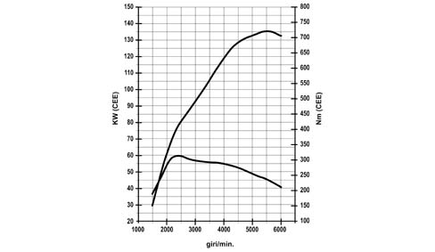
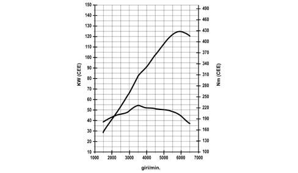
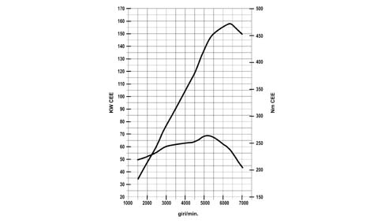
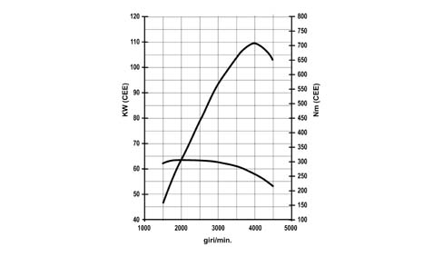
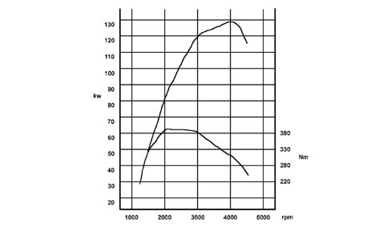

PROVISIONS
- Path
- Technical Data > Design specifications and description > TYPICAL ENGINE CURVES > PROVISIONS
- Kind
- technical data / specifications
- Applies to
- engines: 2.0 TB, 2.4 20V, 2.4 JTD 10V, 2.4 JTD 20V; all production periods
- Interactive page
- https://sloeber94.github.io/elrnDB-lThss/en/#/225781
Applies to: all engines; all production periods
The power and torque curves illustrated can be obtained with the engine overhauled and run in (50 hours operation) without a fan and with an exhaust silencer and air filter fitted, at sea level.
Applies to: engines: 2.0 TB; all production periods
Max torque: 308 Nm at 2200 rpm
Max power: 136 KW at 5500 rpm

Applies to: engines: 2.4 20V; all production periods
Max torque: 226 Nm at 3500 rpm
Max power: 125 kW at 6000 rpm

Applies to: all engines; all production periods
Max torque: 263 Nm at 5000 rpm
Max power: 158 KW at 6300 rpm

Applies to: engines: 2.4 JTD 10V; all production periods
Max torque: 305 Nm at 1800 rpm
Max power: 110 KW at 4000 rpm

Applies to: engines: 2.4 JTD 20V; all production periods
Max torque: 380 Nm at 2000 rpm
Max power: 130 KW at 4000 rpm
